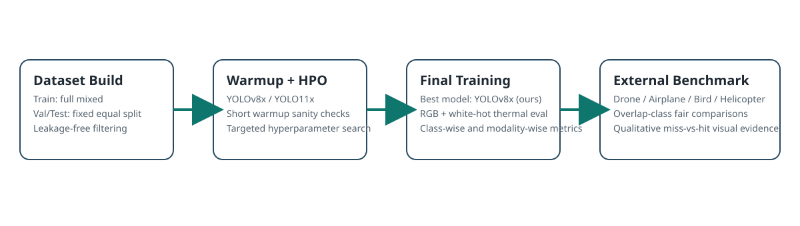

Abstract
We study aerial object detection under multimodal conditions using RGB and white-hot thermal imagery. Our detector is trained and tuned for four classes (airplane, bird, drone, helicopter) and evaluated against open-source external checkpoints under identical test subsets. We report class-wise AP50-95 and AP50 metrics, provide overlap-class fairness evaluations, and show qualitative examples where our model detects targets missed by external alternatives. Results indicate robust gains for our approach in both class-specific and multimodal settings.
Key Metrics
Method Pipeline

Class-wise Comparison (AP50-95)
Class-wise Comparison (AP50)
Model Mapping Used in Charts
RGB Side-by-Side: Ours vs External
Examples selected automatically from class-only RGB test subsets using IoU-based TP/FP matching (IoU ≥ 0.5).
Real-time Video Demo (Ours)
Video açılmazsa direkt bağlantı: heli_detection_ours.mp4
Thermal Small-Object Showcase (Ours)
White-hot Thermal Showcase (Ours)
Sample thermal detections illustrating capability beyond RGB-only baselines.
Citation
@misc{uysal2026aerialmultimodal,
title={Aerial Object Detection under Multimodal Conditions},
author={Talha Uysal},
year={2026},
note={Graduation Thesis Project}
}